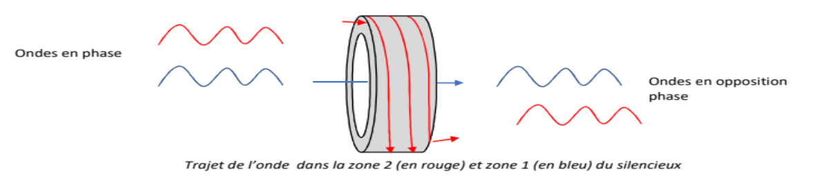
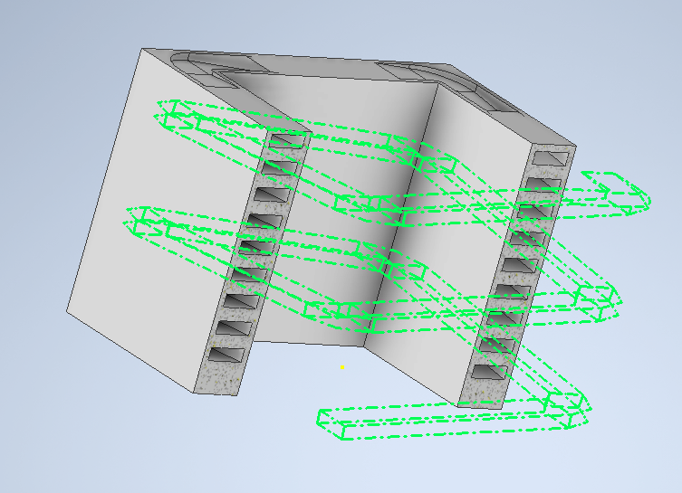
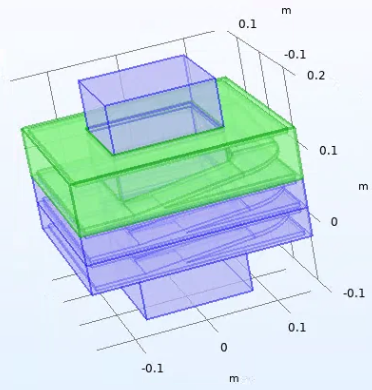
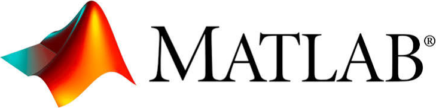
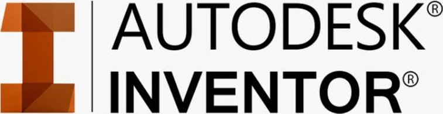

Étude numérique et expérimentale d'un silencieux acoustique innovant basé sur des métamatériaux à interférence de Fano, conciliant atténuation sonore basse fréquence et agglomération des particules fines.
Concilier deux exigences industrielles et environnementales majeures : l'atténuation des nuisances sonores basses fréquences et l'agglomération des particules fines, tout en garantissant une libre circulation de l'air — sans matériau absorbant classique — et un encombrement minimal (15 cm de long).

Bande d'atténuation théorique ciblée : 310 – 590 Hz. La simulation multiphysique confirme le piégeage de l'onde sonore dans les cavités résonantes, notamment à 400 Hz et 580 Hz, validant le principe de fonctionnement du silencieux.
L'étude a également mis en évidence les limites de l'approche : la forte sélectivité des résonateurs et la contrainte de compacité stricte empêchent la fusion parfaite des pics d'atténuation en un filtre coupe-bande continu et uniforme.



